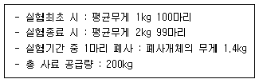
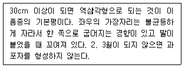
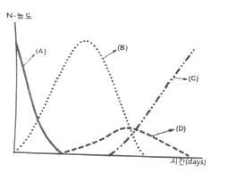

수산양식기사 (2020-06-06 기출문제)
1과목: 어류양식학
1. 사료계수에 대한 내용을 맞게 설명한 것은?
- 어체 1단위 무게만큼 증가시키는데 필요한 사료의 무게 단위
- 사료효율과 같은 의미
- 숫자가 높을수록 좋은 사료를 뜻함
- 증육량을 공급한 사료의 백분율로 나타내는 것
(정답률: 90%)

2. 조피볼락의 새끼 출산은 하루 중 주로 언제 일어나는가?
- 04 ~ 06시
- 09 ~ 10시
- 18 ~ 20시
- 22 ~ 24시
(정답률: 66%)
3. 잉어를 유수식으로 사육한 경우 단위 면적당 생산량은 수량에 따라 다르나 보통은 1m2당 몇 kg 정도 인가?
- 10 ~ 30kg
- 40 ~ 200kg
- 500 ~ 1000kg
- 1000 ~ 1500kg
(정답률: 73%)
4. 다음 중 수산자원의 조성이나 야생동물의 보호 관리 등 자연 자원의 관리에 속하는 것은?
- 양식
- 어업
- 축양
- 증식
(정답률: 74%)
5. Fish culture와 같은 뜻으로 쓰인 용어는?
- Fish management
- Fish farming
- Hatching
- Propagation
(정답률: 92%)
6. 아르테미아(Artemia) 알 부화에 대한 설명으로 옳은 것은?
- 건조된 알의 직경은 0.2 ~ 0.24mm 정도이다.
- 염분농도는 10‰ 이하가 좋다.
- 부화 pH는 산성일수록 좋다.
- 부화 수온은 15℃ 이하로 유지한다.
(정답률: 84%)
7. 실뱀장어를 기르는데 수온을 어느 정도로 유지하는 것이 가장 좋은가?
- 12 ~ 13℃
- 15 ~ 16℃
- 20 ~ 22℃
- 26 ~ 27℃
(정답률: 66%)
8. 다음 사료 형태 중 수질오염을 예방하는데 가장 좋은 사료는?
- MP 사료
- EP 사료
- Paste 사료
- Crumble 사료
(정답률: 90%)
9. 다음 중 양성한 넙치 친어로부터 채란하고자 할 때 친어의 수용밀도가 가장 적당한 것은?
- 1m2 당 1 ~ 2마리
- 1m2 당 3 ~ 4마리
- 1m2 당 5 ~ 6마리
- 1m2 당 7 ~ 8마리
(정답률: 85%)
10. 실뱀장어의 소상과 관련된 설명으로 틀린 것은?
- 주로 밤에 소상한다.
- 대조 시에 많이 소상한다.
- 수온이 낮은(8℃ 이하) 이른 봄에 많이 소상한다.
- 담수가 내려가는 데 소상한다.
(정답률: 69%)
11. 황복 수정란의 발생, 부화 및 전기 자어 사육 시 가장 적합한 염분농도는?(오류 신고가 접수된 문제입니다. 반드시 정답과 해설을 확인하시기 바랍니다.)
- 약 0.5‰ 이하
- 약 10‰ 이하
- 약 20‰ 이하
- 약 30‰ 이하
(정답률: 64%)
12. 참돔의 양식에 있어서 먹이를 주는 방법으로 가장 좋은 것은?
- 조금씩 여러번에 걸쳐 나누어 준다.
- 하루 중 아침과 저녁 무렵 2회에 걸쳐 준다.
- 매일 오전 10시 기준으로 그날 투입량을 한꺼번에 준다.
- 2~3일 만에 한 번씩 대량으로 준다.
(정답률: 85%)
13. 돌돔의 해상가두리양식에 있어 양성관리로 가장 거리가 먼 내용은?
- 입식 후 전장 10cm 정도까지는 EP와 MP 사료를 혼용하여 1일 1~2회 공급한다.
- 겨울철 저수온기(12~4월)에도 매일 1~2회 사료를 공급한다.
- 사육밀도는 초기 입식 시(전장 5~7cm)톤 당 500~1500마리 수용한다.
- 18℃ 이상에서는 성장이 양호하지만, 그 이하에서는 둔화된다.
(정답률: 76%)
14. 우리나라에서 무지개송어의 성장을 계속적으로 높게 유지할 수 있도록 공급하기에 가장 적합한 수원은?
- 계곡수
- 댐호수
- 일반 하천수
- 지하수
(정답률: 90%)
15. 넙치의 산란에 대한 다음 내용 중 가장 거리가 먼 것은?
- 산란기의 수온은 11 ~ 17℃이고, 산란성기의 수온은 13 ~ 17℃이다.
- 넙치의 산란은 오후 1~5시경에 가장 활발하게 일어난다.
- 넙치는 다회 산란을 하며, 약 2~3개월에 걸쳐 수회의 산란을 행한다.
- 친어사육조의 암수 비율은 암컷 1마리에 대하여 수컷은 1.5~2마리가 되도록 하는 것이 일반적이다.
(정답률: 83%)
16. 다음 조건에서 사료효율은?

- 49.0%
- 49.2%
- 49.7%
- 50.0%
(정답률: 83%)
17. 은어 양식에 대한 설명으로 옳은 것은?
- 수온은 12 ~ 20℃에서 부화한다.
- 부화 적수온에서 5일만에 부화한다.
- 수정란은 해수에서 부화시킨다.
- 부화 자어의 초기먹이로 아르테미아를 공급한다.
(정답률: 61%)
18. 무지개송어 양식을 위한 먹이 공급의 설명으로 틀린 것은?
- 1일분의 먹이를 1회에 한꺼번에 주지 않고 2회로 나누어 준다.
- 먹이가 바닥에 떨어지기 전에 다 받아먹을 수 있는 정도로 천천히 조금씩 주어야 한다.
- 100% 충분히 먹었을 때 사료의 효율이 가장 높다.
- 수온이 갑자기 너무 높아지거나 너무 낮아졌을 때는 먹이 주는 양을 감소시켜야 한다.
(정답률: 93%)
19. 틸라피아 가두리 양식의 장점이 아닌 것은?
- 번식억제
- 토지부족 해결
- 고밀도사육
- 품종개량
(정답률: 84%)
20. 조피볼락의 출산시기 판단에 관한 내용으로 가장 거리가 먼 것은?
- 항문, 생식구 및 비뇨돌기는 약간 팽출되어 있는 상태로 그 주변부는 담청색으로 띠고 있는 개체가 많은 경우 출산시기가 어느 정도 남은 것임
- 항문으로부터 비뇨돌기에 이르기까지 거의 동일하게 팽출되지만 생식구의 선단부는 팽출되어 있지 않으며 항문으로부터 비뇨돌기에 걸쳐 자색이나 암청색의 색을 보일 때는 출산시기가 가까워진 것임
- 배가 부르고 머리에 추성이 생기며, 움직임이 둔한 경우 출산이 많이 남아 있음
- 항문, 생식구 빛 비뇨돌기 주변은 현저히 팽출하여 그 주변 부위의 색깔은 암청색 또는 암자색을 나타낼 경우 출산직전임
(정답률: 84%)
2과목: 무척추동물양식학
21. 전복류의 생활사 중 성장단계와 먹이의 연결이 옳지 않은 것은?
- 부유 생활기 – 소형 부착 규조류
- 저서 초기 – 부착 규조류
- 저서 후기 – 부착 규조 또는 소형 해조류
- 저서 후기 이후 – 해조류
(정답률: 84%)
22. 멍게(우렁쉥이)의 서식장으로 적당하지 않은 곳은?
- 수온 범위가 5 ~ 24 ℃인 곳
- 외해의 영향을 많이 받는 곳
- 수심 20m내외로 저질이 암초 또는 자갈로 형성된 곳
- 여름철 강우 등으로 염분으로 낮은 곳
(정답률: 78%)
23. 다음 중 이동력이 강하여 양식 시 각별히 주의해야 할 종은?
- 바지락
- 대합
- 피조개
- 키조개
(정답률: 89%)
24. 다음 조개류의 유생 중 자연상태에서 부유생활 기간이 가장 긴 것은?
- 참굴
- 피조개
- 참가리비
- 진주담치
(정답률: 62%)
25. 고막의 바닥양성에 대한 설명으로 옳은 것은?
- 조간대에서부터 조하대 사이에서 양성한다.
- 저질은 모래질로 다소 붉은 색을 띤 회백식이 좋다.
- 해조류가 많은 곳은 좋지 않다.
- 해수의 흐름이 거의 없는 내만에 양성한다.
(정답률: 60%)
26. 다음 중 조개류의 인공 종묘 생산 시 먹이의 가치가 가장 큰 것은?
- 스켈레토네마(Skeletonema)
- 모노크리시스(Monochrysis)
- 키로세로스(Chaetoceros)
- 녹티루카(Noctiluca)
(정답률: 54%)
27. 전복류의 성숙에 대한 설명으로 옳은 것은?
- 전복의 성숙된 난소는 선홍색이며 정소는 황백색이다.
- 전복의 성숙에 가장 큰 영향을 미치는 요인은 염분이다.
- 까막전복의 성숙기초수온은 5.3℃이다.
- 참전복의 성숙에 필요한 적산수온은 3500℃이다.
(정답률: 73%)
28. 바지락 치패 발생장에 대한 설명으로 옳지 않은 것은?
- 하천수의 유입으로 인한 육수의 영향을 받는 간석지
- 해수가 정체하지 않고 지속적으로 유동이 있는 곳
- 모래질이 많은 곳
- 태풍, 홍수 등에 의한 지반 변동이 거의 없는 곳
(정답률: 45%)
29. 부착기에 도달한 피조개 유생의 일반적인 평균 각장 크기는?
- 200㎛ 내외
- 230㎛ 내외
- 360㎛ 내외
- 540㎛ 내외
(정답률: 69%)
30. 다음 양식생물 중 부유유생 기간이 가장 긴 종류는?
- 닭새우
- 키조개
- 참가리비
- 보리새우
(정답률: 62%)
31. 진주담치의 채묘에 관한 설명으로 옳은 것은?
- 채묘장소는 파도가 있는 외해역이 좋다.
- 채묘시설은 침설식을 많이 쓴다.
- 부착층은 주로 표층으로부터 1 ~ 2m 수층이다.
- 고른 종패 부착을 위해 채묘연 이동을 금지한다.
(정답률: 57%)
32. 고막류 중에서 수심이 가장 깊은 곳에서 양성 가능한 종류는?
- 고막
- 새고막
- 피조개
- 큰이랑피조개
(정답률: 70%)
33. 단렬종굴의 생산과정을 4단계로 나눌 때 3단계에 해당하는 것은?
- 채묘예보
- 해적구제
- 단련
- 채묘
(정답률: 89%)
34. 무척추동물 중 돌리올라리아(doliolaria)라는 유생기를 가지는 종은?
- 수랑
- 해삼
- 따개비
- 불가사리
(정답률: 87%)
35. 전복용 배합사료의 조건으로 틀린 것은?
- 기호성이 좋고 높은 성장률을 얻을 수 있는 것
- 수중에서 잘 풀려 전복이 먹기 용이 한것 .
- 취급이 쉽고 방부성도 우수할 것
- 경제성이 있을 것
(정답률: 90%)
36. 참굴의 채묘예보에 대한 설명으로 옳은 것은?
- 부유유생의 조사는 매일 간조 시에 실시한다.
- 참굴의 부유유생의 부착 직전의 크기는 0.7mm이다.
- 채묘예보는 따개비 유생의 부착수가 점점 감소하는 시기가 적당하다.
- 유생 채집망은 5m 깊이에서 수평으로 끌어서 채집한다.
(정답률: 80%)
37. 발생도중에 트로코포라(Trochophora) 유생기를 거치는 것은?
- 갯지렁이
- 문어
- 우렁쉥이
- 보리새우
(정답률: 74%)
38. 피조개 서식장으로 알맞지 않은 곳은?
- 해저의 물길 같은 곳
- 육수의 영향을 받지 않는 곳
- 파도의 영향을 적게 받는 내만
- 저질이 개흙질로 된 부드러운 곳
(정답률: 47%)
39. 보리새우의 발육단계 순서로 맞는 것은?
- 배 → 유생 → 유하 → 약년 → 치하 → 성체
- 배 → 유생 → 치하 → 유하 → 약년 → 성체
- 배 → 치하 → 유하 → 유생 → 약년 → 성체
- 배 → 유하 → 유생 → 약년 → 치하 → 성체
(정답률: 69%)
40. 조위망식 양성을 가장 맞게 설명한 것은?
- 그물과 말목으로 간석지를 막고 그 안에 종패를 방양하여 양성하는 방법이다.
- 양성생물이 도망하지 못하도록 그물로 만든 가두리를 수중에 매달아 양성하는 방법이다.
- 그물로 천해의 일부나 전부를 막고 물의 교환은 간만에 외한 해수의 조차를 이용하여 양성하는 방법이다.
- 개방식 양성법 중에서 가장 발달한 양성법이다.
(정답률: 79%)
3과목: 해조류양식학
41. 미역과 넓미역의 암수 배우체를 배양하여 교잡시키면 어떻게 되는가?
- 미역의 형질이 대부분 우성으로 나타난다.
- 넓미역의 형질만이 우성으로 나타난다.
- 종이 다르므로 교잡이 되지 않는다.
- 미역과 넓미역의 중간적인 형질이 많이 나타난다.
(정답률: 79%)
42. 김의 맛을 내는 아미노산 성분이 아닌 것은?
- 글리신
- 알라닌
- 글루탐산
- 디메틸설파이드
(정답률: 82%)
43. 김 냉장씨발을 동결할 때 0℃에서 –20℃까지의 소요 시간으로 가장 적합한 것은?
- 수 초 이내
- 수 분 정도
- 10시간 정도
- 2 ~ 3일 정도
(정답률: 73%)
44. 2년생 다시마의 양식이 가능한 해황 조건은?
- 9 ~ 13℃의 저수온기가 같다.
- 투명도가 15m 이상 되는 시기가 많다.
- 여름 표층수온이 28℃이다.
- 수심 12m 이상의 수온이 언제나 25 ~ 26℃ 이하이다.
(정답률: 74%)
45. 미역은 여름철 고수온기에 어떤 상태인가?
- 현미경적인 암, 수 의 배우체 상태
- 유엽 상태
- 노쇠한 엽체 상태
- 휴면포자 상태
(정답률: 70%)
46. 외양의 깊은 곳에 가장 알맞은 김양식 시설은?
- 섶
- 뜬흘림발
- 뜬발(지네발)
- 뜬발(그물발)
(정답률: 79%)
47. 냉장발의 급속 동결 온도와 저장 온도는?
- 급속 동결 온도 –20 ~ -30℃, 저장 온도 0 ~ -5℃
- 급속 동결 온도 –20 ~ -30℃, 저장 온도 -15 ~ -25℃
- 급속 동결 온도 –30 ~ -45℃, 저장 온도 0 ~ -5℃
- 급속 동결 온도 –30 ~ -45℃, 저장 온도 -15 ~ -25℃
(정답률: 81%)
48. 주광성을 갖는 것은?
- 미역의 유주자
- 김의 과포자
- 우뭇가사리의 사분포자
- 홑파래의 배우자
(정답률: 77%)
49. 김의 사상체에서 만들어진 포자는?
- 각포자
- 과포자
- 사분포자
- 중성포자
(정답률: 70%)
50. 세대교번을 하지 않는 해조류는?
- 미역
- 김
- 다시마
- 청각
(정답률: 83%)
51. 양식장에서 자연채묘를 할 때의 각포자 방출 주기는?
- 4일
- 7일
- 14일
- 30일
(정답률: 51%)
52. 다시마 양성 시 시기별로 수위조절을 하는 방법이 틀린 것은?
- 가을에서 3월까지는 수면 하 1m
- 봄 4 ~ 5월에는 수면 하 1.5m
- 여름 6 ~ 7월에는 수면 하 2 ~ 2.5m
- 한 여름의 8월에는 수면 하 8 ~10m
(정답률: 79%)
53. 김 종묘 배양장에 대한 설명으로 옳은 것은?
- 가능한 직사광선이 잘 들어올 수 있도록 한다.
- 수온 변화를 방지하기 위해 가능한 통풍이 되지 않도록 한다.
- 조도와 온도의 변화가 비교적 적은 북향 건물이 좋다.
- 수조의 깊이는 수하식과 평면식 모두 80cm 내외가 적당하다.
(정답률: 83%)
54. 다음은 어느 김의 특성을 설명한 것인가?

- 참김
- 둥근돌김
- 큰참김
- 큰방사무늬김
(정답률: 72%)
55. 우뭇가사리의 번식 방법에 해당되지 않는 것은?
- 포복지 번식
- 재생 번식
- 사분포자 번식
- 구상체 번식
(정답률: 70%)
56. 톳의 경쟁해조로서 증식에 직접적으로 영향을 미치는 해조는?
- 개서실
- 진두발
- 패
- 모자반
(정답률: 54%)
57. 우리나라에서 양식되고 있는 해조류를 나열한 것 중 옳지 않은 것은?
- 모무늬돌김, 매생이, 톳
- 큰참김, 꼬시래기, 미역
- 다시마, 잇바디돌김, 납작파래
- 방사무늬돌김, 해인초, 톳
(정답률: 64%)
58. 미역 종묘의 가이식 필요성에서 볼 때 그 비중이 가장 낮은 것은?
- 미역 종묘의 배양수조나 탱크를 김의 인공채묘에 빨리 이용하기 위해
- 아포체나 유엽의 성장을 촉진시키기 위해
- 부니와 잡생물의 제거 작업 또는 싹녹음 예방을 위해
- 씨줄을 어미줄에 감을 때의 종묘 손상을 막기 위해
(정답률: 72%)
59. 긴잎돌김의 특성은?
- 조생종이다.
- 색택이 나쁘다.
- 질이 부드럽다.
- 자웅동주이다.
(정답률: 71%)
60. 미역의 채묘 적온은?
- 15℃ 전후
- 17 ~ 20℃
- 20 ~ 23℃
- 23℃ 이상
(정답률: 66%)
4과목: 양식장환경
61. 순환여과식 양식 시설에서 축적된 질산염을 분해하는 여과 단계는?
- 1차 여과
- 2차 여과
- 3차 여과
- 4차 여과
(정답률: 79%)
62. 독성 물질에 의한 생물의 이동 및 도피를 유발케 하는 농도는?
- 치사농도
- 혐기농도
- 불포농도
- 만성농도
(정답률: 79%)
63. 순환여과식 양식시스템 내 생물여과조의 질산화 작용에 가장 적합한 pH 범위는?
- 5 ~ 6
- 6 ~ 7
- 7 ~ 8
- 8 ~ 9
(정답률: 67%)
64. 수중의 용존산소에 대한 설명으로 틀린 것은?
- 용존산소량은 수온이 올라가거나, 염분 등의 용존 물질이 증가하면 감소한다.
- 공기 중의 산소가 물속에 들어가는 속도는 공기와 물 표면의 접촉 면적에 반비례한다.
- 용존산소량이 낮을 때는 에어레이션의 효과가 잘 나타나나, 포화상태에서는 용존산소량을 더 높이는 데 큰 힘이 든다.
- 식물플랑크톤에 의해서 여름철 못 속의 용존산소량은 낮에는 많아지고, 밤에는 줄어드는 주야 변화를 하는 것이 일반적이다.
(정답률: 87%)
65. 수중의 암모니아 생성 및 독성에 대한 설명으로 틀린 것은?
- 암모니아는 어류의 아가미를 통해 주로 배설된다.
- 이온화된 암모니아가 이온화되지 않은 암모니아보다 더 높은 독성을 나타낸다.
- 수중 용존산소 농도가 증가하면 이온화되지 않은 암모니아 독성이 감소된다.
- 해수에서는 담수에 비해 암모니아 독성에 대한 피해가 일반적으로 높다.
(정답률: 66%)
66. 물 속에 용존되어 있는 이온화되지 않은 암모니아(NH3)의 양은 pH가 1단위 증가할 때(예 : pH 7→8) 어떻게 변하는가?
- 2배 정도 증가한다.
- 10배 정도 증가한다.
- 1/10 정도 감소한다.
- 1/2 정도 감소한다.
(정답률: 81%)
67. 은어양식에서 면적이 100m2이고, 수심이 1m이면 1분간 어느 정도 이상의 용수가 확보 되어야 하는가? (단, 시간당 0.3회 환수를 기준으로 한다)
- 0.⑤m3
- 0.10m3
- 0.25m3
- 0.5m3
(정답률: 54%)
68. 원형지를 이용한 은어양식에서 못 중앙을 향한 바닥의 경사도로 가장 적합한 것은?
- 1/1 ~ 1/5
- 1/6 ~ 1/14
- 1/15 ~ 1/25
- 1/50 ~ 1/100
(정답률: 75%)
69. 양어장 용수로써 지하수를 이용할 때 일반적으로 반드시 실시해야 할 작업은?
- 가온
- 냉각
- 에어레이션
- 중화
(정답률: 83%)
70. 천해 양식장에서 적조를 일으키는 대표적인 식물플랑크톤은?
- 갈조류
- 와편모조류
- 허족충류
- 유공충류
(정답률: 85%)
71. 순환여과식 양식에 대한 설명이 틀린 것은?
- 물의 사용량을 절약할 수 있다.
- 고밀도 양식이 가능하다.
- 초기 투자비용이 높다.
- 해적생물과 질병에 대한 대책이 어렵다.
(정답률: 87%)
72. 다음 중 인위적으로 먹이공급을 해주어야 하는 양식 방법은?
- 바닥양식
- 밧줄식양식
- 가두리양식
- 수하식양식
(정답률: 84%)
73. 수생식물들의 광합성 작용이 왕성할 때의 수질변화에 대한 설명이 아닌 것은?
- 수소이온농도가 낮아진다.
- 총탄산양이 감소한다.
- 질산염, 인산염량이 감소한다.
- 용존산소가 증가한다.
(정답률: 66%)
74. 어류의 고밀도 양식 시 환경오염을 가장 최소화할 수 있는 양식방법은?
- 가두리 양식
- 유슈식 양식
- 정수식 지중 양식
- 순환여과식 양식
(정답률: 89%)
75. 자연 간석지나 모래터를 개량하여 저서 생물의 초기 발생이 잘 되게 조성하는 저질 개선 방법은?
- 객토
- 준설
- 바닥갈이
- 인공 간석
(정답률: 69%)
76. 다음 유해물질 중 가장 낮은 농도로도 양식어류에 유독한 것은?
- 암모니아
- 이산화탄소
- 아질산
- 황화수소
(정답률: 78%)
77. 해수 내 녹아있는 기체 중 가장 높은 농도를 나타내는 것은?
- 질소
- 산소
- 이산화탄소
- 아르곤
(정답률: 66%)
78. 파이프 안의 물이 아래로 흘러내리면서 공기를 함께 흡인하여 물속으로 혼합시키는 에어레이션 장치는?
- 벤투리관 에어레이션
- 표면 에어레이션
- 확산 에어레이션
- U 자관 에어레이션
(정답률: 87%)
79. 고속모래여과에 대한 설명으로 옳은 것은?
- 여과용량이 적기 때문에 양식장보다는 실험실 등에서만 이용된다.
- 여과능력은 여과조의 표층에서만 일어난다.
- 여과능력은 여과 재료의 표면적에 비례한다.
- 여과효율을 높이기 위해서는 자주 역세척을 해야 한다.
(정답률: 78%)
80. 질산화 과정 동안의 질소 농도(N-농도) 변화를 나타낸 그림에서 (D)에 적합한 것은?

- 유기태 질소
- 암모니아성 질소
- 아질산성 질소
- 질산성 질소
(정답률: 74%)
5과목: 수산질병학
81. 공장폐수 등의 수질오염이 원인이 되는 갯병은?
- 흰갯병
- 붉은갯병
- 암종병
- 싹갯병
(정답률: 60%)
82. 어류의 혈액에 기생하여 빈혈증과 잠자는 병(SLEEPING SICKNESS)증을 일으키는 원인충은?
- Trypanosoma sp.
- Cryptobia sp.
- Eimeria sp.
- Myxobolus sp.
(정답률: 58%)
83. Nocardia seriolae 균에 감염된 방어의 특징적인 증상은?
- 주둥이의 탈락
- 아가미의 결절
- 지느러미의 흑변
- 안구의 백탁
(정답률: 80%)
84. 송어의 Furunculosis를 일으키는 병원균은?
- Aeromonas hydrophila
- Aeromonas salmonicida
- Pseudomonas fluorescens
- Pseudomonas anguilliseptica
(정답률: 56%)
85. RNA virus에 속하지 않는 것은?
- Togavirus
- Reovirus
- Myxovirus
- Adenovirus
(정답률: 58%)
86. 어류의 혈액기생충으로 짝지어진 것은?
- 오디니움 - 코스티아
- 브루크리넬라 – 익티오보도
- 크립토비아 - 트리파노조마
- 핵사미타 – 트리코디나
(정답률: 71%)
87. 어류 질병의 원인이 되는 섬모충이 아닌 것은?
- 백점충
- 트리코디나충
- 스쿠치카충
- 익티오보도
(정답률: 68%)
88. 송어 치어에 발병하여 많은 피해를 주는 OMV의 증상, 해부학적 특징, 병리조직학적 특징에 대한 설명이 아닌 것은?
- 간장의 부분적 백색화 혹은 전체의 퇴색
- 복수의 증가, 빈혈, 심근경색
- 체색흑화, 안구돌출, 안와, 하악, 지느러미 기부에 출혈
- 간장에 심한 괴사, 거대세포의 형성, 심장근육의 수종 형성
(정답률: 43%)
89. 무지개송어의 전염성 췌장괴사증(IPN)과 관계가 먼 것은?
- 위장의 카타르성 염증이 생긴다 증상
- 초기에 죽는 개체는 나선형 운동을 하다가 바닥에 가라 앉아 죽는다.
- 50g 이상 크기의 어류에 감염된다.
- 체색이 검어진다.
(정답률: 74%)
90. 양식 어류가 복부를 수면에 노출시키면서 운동하는 모습이 관찰된다면 어떤 경우인가?
- 먹이를 많이 먹었을 경우
- 부레가 파열되었을 경우
- 점액포자충에 감염되었을 경우
- 복수가 많이 고여있을 경우
(정답률: 72%)
91. 진균류에 속하는 곰팡이로 물고기에 기생하여 균사체를 이루는 것은?
- 물곰팡이
- 털곰팡이
- 거미줄곰팡이
- 푸른곰팡이
(정답률: 73%)
92. DNA virus가 아닌 것은?
- LCDV
- RSIV
- CCV
- VHSV
(정답률: 62%)
93. 절창병에 대한 설명 중 틀린 것은?
- 급성은 대개 외부증상이 없다.
- 피부, 아가미, 먹이를 통하여 감염된다.
- 온수성 어류에 잘 나타난다.
- 체표에 농창을 형성한다.
(정답률: 67%)
94. 송어류에 유행하는 전신적인 전염병인 절창병의 증상은?
- 체표의 비늘이 일어선다.
- 피부에 융기된 부스럼이 생긴다.
- 온수성 어류에 잘 나타난다.
- 체표에 농창을 형성한다.
(정답률: 64%)
95. 조가비 사상체에 녹변장해가 생기는 원인과 가장 관계가 깊은 것은?
- 규조 발생
- 저비중
- 영양 부족
- 온도 상승
(정답률: 46%)
96. 방어의 세균성 질병으로 Lactococcus균의 감염에 의한 연쇄구균증의 피해가 크다. 이 병이 쉽게 치유되지 않는 이유는?
- 병원체가 쉽게 내성균으로 변하기 때문이다.
- 환부가 육아종으로 변해 그 속에 병원균이 있기 때문이다.
- 이 병원균이 혈액 내에서 포자를 형성하기 때문이다.
- 이 병원균이 근육 내에서 협막을 만들기 때문이다.
(정답률: 88%)
97. 잉어에 산화지방을 장기간 투여하면 등여윔병이 발생하는데, 이 병을 예방 및 치료하려면 사료에 무엇을 투여해야 하는가?
- 설파메사진
- 옥소린산
- 아쿠아후라빈
- 비타민 E
(정답률: 72%)
98. 세균성 질병 감염 시 내부 장기에 흔 반점을 형성하지 않는 것은?
- Photobacterium damselae subsp. piscicida
- Edwardsiella tarda
- Listonella anguillarum
- Renibacterium salmoninarum
(정답률: 40%)
99. 어패류의 병원균으로 내열성이 약하여 60℃에서 사멸하고 호기성이며, 형광성 색소를 형성하는 일이 많아 일명 형광균이라 불리는 세균무리는?
- 비브리오
- 에로모나스
- 슈도모나스
- 플렉시박터
(정답률: 62%)
100. 연어과 어류에서 발병되고 있는 Renibacterium salmoninarum에 의한 세균성 신장병에서 균의 성상과 관련이 없는 것은?
- 비운동성, 비항상성 균이다.
- Gram 음성의 간균으로 대부분 간상을 띤다.
- 카탈라아제, 옥시다아제에 각각 양성과 음성을 나타낸다.
- 분리배지로는 CSA베지. KDM-2배지 등이 사용된다.
(정답률: 69%)